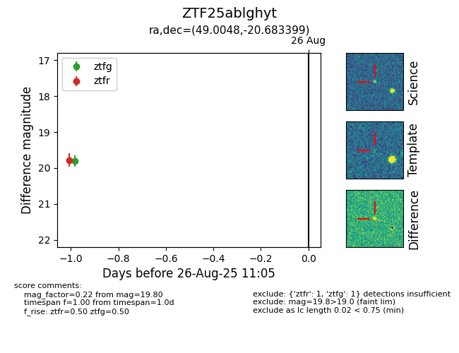

Target ZTF25ablghyt at 2025-08-26 11:05, see:
FINK: fink-portal.org/ZTF25ablghyt
Lasair: lasair-ztf.lsst.ac.uk/objects/ZTF25ablghyt
ALeRCE: alerce.online/object/ZTF25ablghyt
alt names
ZTF25ablghyt (ztf,fink)
coordinates:
equatorial (ra, dec) = (49.0048,-20.68340)
galactic (l, b) = (209.8058,-56.45162)
photometry
last ztfg=19.80, ztfr=19.78
1 ztfg, 1 ztfr detections
